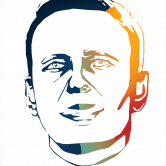
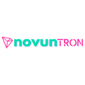
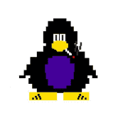
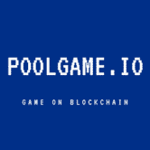
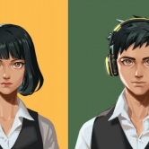
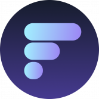

 Novaline PolyPoly Enterprise GmbH 公司开发用于货币、股票和加密货币市场交易的人工智能。是一家由IT与自动化、金融与银行、远程交易三位专家创立的金融科技公司。十多年来，我
 NovunTron 去中心化社区基金，您每天可赚取 1.5% 的被动收入。您还可以通过我们的联盟计划赚取 7% 的佣金。 成为 NOVUNTRON 社区基金的一部分 最低 100 TRX 没有最高开始 无限提款 每天 1.5%
OneLine by AndyPark AndyPark AKA 100/100 限量版。MetaGhostz 创作者、著名船员、定制艺术家 OneLine Rode 地图： 更多活动将很快添加 1、上线收藏 首购特惠 1~10 铸币价格 15 Klaytn 11~20 铸币价格 20 klaytn 21~40
Original Art by Alexandria Pooré 我的原创作品的数字捕捉。主要是布面油画。我也做混合媒体和雕塑。作为一名艺术家，我受到街头艺术和涂鸦的启发，并被超现实主义人物和明亮的调色板所
Pegasus Republic 飞马共和国 - 你决定。鲍勃·霍斯曼是谁？ 一个去中心化的自治代币，社区控制通货膨胀、税收、利息和燃烧率。 Pegasus Republic 是 SafeMoon 合约的一个分支，它用社区投票取代
Pegasusdollar.finance Pegasus Dollar 是一种与 METF 挂钩的算法代币 该协议旨在扩大和收缩供应，类似于中央银行交易财政债务以稳定购买力的方式，没有任何基础或抵押风险。 PES 和 SPES 代币通过收
 PenguinPunks PenguinPunks 是由计算机生成的 10,000 个独特的收藏角色，其所有权证明存储在币安智能链上。PenguinPunks 是您可以铸造、拥有和交易的酷炫新 NFT。 一款类
PolyWall 什么是 PolyWall ？ 这是什么？它是免费的吗？有什么规则吗？ PolyWall 是存储在 Polygon 区块链上的纯文本文件。这面墙上有 2^256-1 行。每行长度为 100 个字符。 新线路的创建是免费的。
PolyWantsACracker 什么是 PolyWantsACracker ？ PolyWantsACracker 是 Polygon Network 上的一个收益农场。它是分层农业系统的第一层，第二层将包括通货膨胀农业代币和所有权代币。 Polygon (MATIC) 上排名第一的 AMM 和收益农场。 我很开
PolyWAVE 什么是 PolyWAVE ？ Polywave 是一个由 surf.finance 生态系统支持的项目。通过持有 WAVE，您就拥有了金库的所有权。WAVE 最初可以通过使用 matic/wave 质押单个资产或 LP 来耕种。产生的
PolyWeed Finance 什么是 PolyWeed 金融？ PolyWeed 是一个全新的 DeFi Yield Farming 平台，活跃在最近发展的 Polygon 网络上。我们是一个新的开发者团队，愿意在去中心化金融的非凡和高速世界中带来创新和改
PolyWise 什么是 PolyWise ？ PolyWise Finance是Polygon网络上的下一代收益农业协议，具有许多独特和创造性的功能，使您能够获得被动收益。 在 polywise 上，您将能够在我
PolyWolf 什么是 PolyWolf ？ PolyWolf 是一个在 Matic 上运行的去中心化收益农场，具有许多其他功能，例如收益聚合器和 wolfpack 功能。 我们正在尝试做的是创建最终的去中心化平台，可以满足
PolyYeld Finance 什么是 PolyYeld 金融？ Polyyeld Finance 是 Polygon Network 上的下一代收益农业协议。 PolyYeld Finance是Polygon网络上的下一代收益农业协议，具有许多独特和创造性的功能，使您
PolyYeld Finance V2 什么是 PolyYeld Finance V2 ？ PolyYeld Finance 是 Polygon 网络上的下一代单产农业协议 PolyYeld Finance是Polygon网络上的下一代收益农业协议，具有许多独特和创造性的功能，使您
Pomerun 什么是 博美伦？ Pomerun 是 Pomerium 团队制作的第一款手机游戏。Pomerun 是一款包含表情包的休闲风格跑步游戏。该游戏将在 App Store 和 Google Play 上推出。 Pomerium 是一个 P2E 平台，
Ponzi Protocol 什么是 庞氏协议？ 庞氏协议是 Cronos 区块链上的下一代自动质押协议，以超高可变 APY 和 $WCRO 奖励其持有者，同时保持公平的税收百分比。庞氏协议具有内置的高燃烧和
PONZI Token 什么是 庞氏代币？ PONZI 代币是一个 MEME 项目，感谢 [PONZI] 代币，我们将购买加密货币并持有它“直到更好的时期”，从而通过持有它来平衡硬币价格的短期和长期波动的
PONZIPOT 什么是 PONZIPOT ？ PONZIPOT是一群成员共享一个罐子，根据每个人获胜的角色参与贡献和分配收益。每个 POT 本身就是一个 DAO，它结合了 DEFI 和 GOVERNANCE 的目的。 DEFI
 Poolgame.io 什么是 Poolgame.io ？ Poolgame.io 是一个去中心化的赌博协议，在 Polygon 上具有可证明的随机数随机源。我们授权玩家、开发者、游戏供应商和代理机构参与一个对所有人开放且可访问
Poolsuite - Executive Member 什么是 Poolsuite - 行政会员？ 持有 Poolsuite 行政会员卡表明您在互联网上流社会的精英中享有盛誉，并说明了您在网络上的生活方式。此 NFT 可以连接到您在 Poolsuite.net 上的帐户以解锁
Ram Protocol Ram 协议是 ThunderCore 链上的去中心化非托管借贷协议。存款人可以通过借贷资产赚取利息和 Ram 代币，而借款人支付利息是为了在赚取 Ram 代币的同时借入资产。Ram 旨在
RAMP DEFI RAMP DEFI 是一个优化的抵押稳定币借贷平台，通过在 Binance Smart Chain 和 Polygon 中释放稳定币流动性并同时获得高收益，以及包括 Ethereum、Solana 和 Polkadot 在内的新区
 Rare Land NFT NFT 不应该只是 JPEG。获得一份 Rare Land NFT 并加入我们在 Rare Land 中跳舞！ Rare Land NFT 是用 100 多首歌曲解锁我们的音乐游戏并与朋友战斗的门户，10,000 个 Rare Land NFT 的
Rare Metamon Collection Rare Metamon 是 11,646 个独特的 Metamon NFT 的集合。他们是RadioCaca（RACA）在BNB链上设计的基于区块链的游戏“Metamon World”中供应有限的主
 Rareboard Rareboard 的使命是为收藏家提供在 BNB 链 NFT 空间中取得成功所需的唯一平台。作为 NFT 市场聚合器，我们致力于提供精确的 NFT 数据、全面的铸造机会以及买卖双方之间的每
RAREcity 欢迎来到建立在 Wax 区块链上的 NFT 资产数字生态系统 RAREcity。探索我们不断扩大的 NFT 资产集合、资产商店和由 RARc 代币提供支持的新 RAREcity NFT 质押/平衡平台
RatAlert 巴黎 - 这是一个有抱负的创业厨师走向顶峰的城市。只有极品奶油才能打造自己的 GourmetFood 厨房，例如 Metaverse 中著名的 3 星级餐厅 LeStake©。扮演烹饪企业家的角